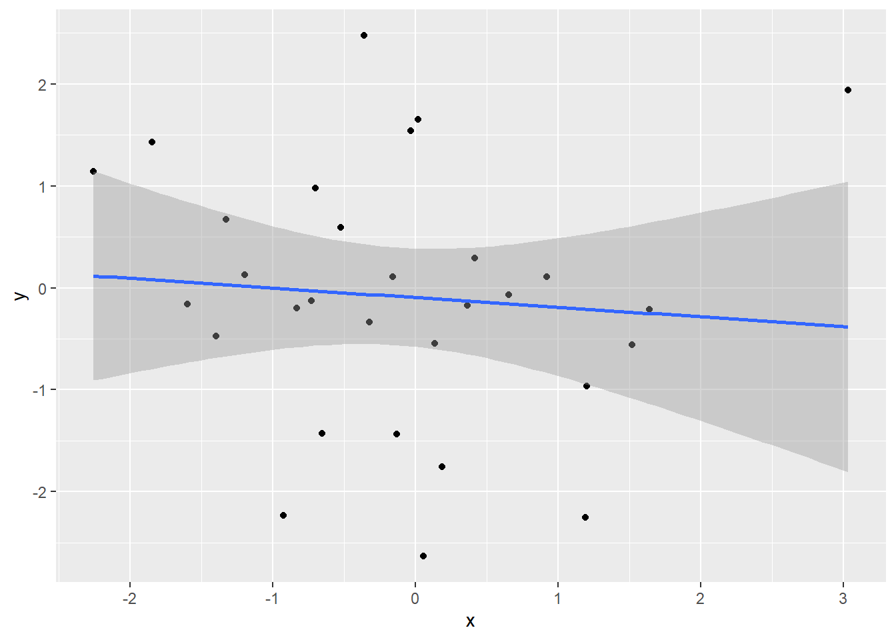
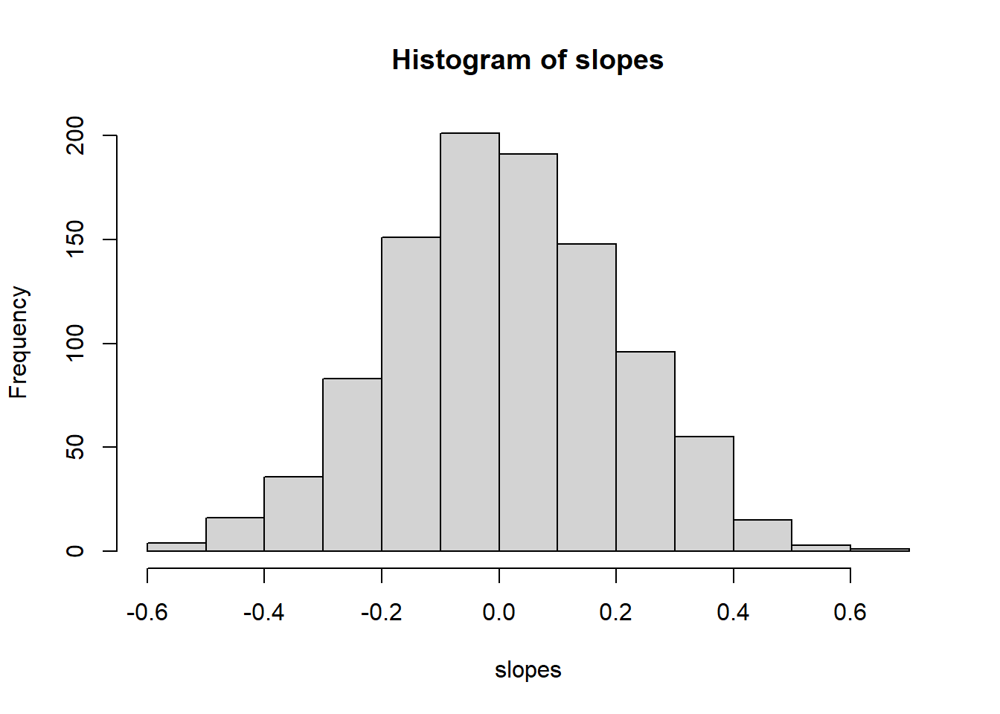
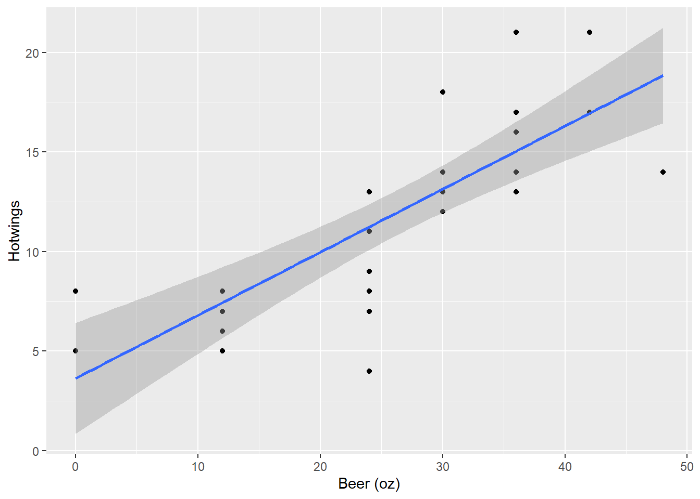

library(tidyverse)
set.seed(44)
data.frame(x=rnorm(30),y=rnorm(30)) |>
ggplot(aes(x=x,y=y))+
geom_point()+
geom_smooth(method = "lm")
John Mayberry
In the Module 1.1 notes, we went around slapping trendlines onto data and using them to make predictions. We have some metrics which will help us judge between competing models, but sometimes we might see a linear trend even when none exists. For example, I could randomly generate 30 points and get a line with negative slope.
library(tidyverse)
set.seed(44)
data.frame(x=rnorm(30),y=rnorm(30)) |>
ggplot(aes(x=x,y=y))+
geom_point()+
geom_smooth(method = "lm")
The slope is pretty close to 0 which is what it theoretically should be since our model for generating the data above was just
\[ Y_i = 0 \times X_i + \varepsilon_i \]
where \(\varepsilon\_i\) is standard normal, but it is still negative and if we didn’t know it was fake data, we might be tempted to conclude that there is a noisy linear relationship between \(x\)
and \(y\).
The inferential approach to linear models asks the following question: is the slope I got “significantly” nonzero. In statistics, significance implies that some kind of hypothesis test is at play. Without rehashing all of introductory statistics, I want to briefly explore two key terms that we will need this semester
We’ll do so in the context of finding the slope in an SLM.
The first thing to note is that in order to talk about the standard error of an estimator, we need to think of it as a random variable. Its standard error is then the standard deviation of its distribution. For example, if I replicate the experiment above by choosing 30 random x and y values 1000 times and computing the coefficient for each replicant, I will get a normal distribution of different slopes:
set.seed(45)
slopes = replicate(1000, {
x = rnorm(30)
y = rnorm(30)
coef(lm(y ~ x))[2]
})
hist(slopes)
This is aclled a Monte Carlo Simulation. The mean of this distribution is close to 0 because that is what the answer should be1
while the standard deviation of this distribution is the standard error of our estimate of the slope
A good rule of thumb is that most observations of a random variable fall within 2–3 standard deviations of its mean2 Using this guideline, our simulation suggests that slopes of randomly generated pairs (using the specific normal paramaters above for to define random) should typically fall in the interval
If a computed slope falls outside this range, it would be considered unusual and may indicate that the true slope is significantly nonzero. For instance, if I generate data with the same noise but introduce an actual slope of 1, the estimated slope will fall outside this range, confirming its significance.
In this case, we would would say that the variable \(x\) is a “significant” predictor of \(y\). Its slope matters.
Since we cannot rely on simulations like this for real data3, classical statistics gives us estimates of the standard error of the slope under SLM4: \[ SE(slope)= \sigma/\sqrt{\sum (x_i-\bar{x})^2} \]
where \(\sigma\) is the standard deviation of the noise. This formula is baked into lm as well5 and can be viewed using summary. Let’s look at it for our Beerwings data
Beerwings <- read.csv("../Datasets/Beerwings.csv")
bw_lm=lm(Hotwings~Beer,data=Beerwings)
summary(bw_lm)
Call:
lm(formula = Hotwings ~ Beer, data = Beerwings)
Residuals:
Min 1Q Median 3Q Max
-7.2364 -1.3603 -0.1868 1.2658 5.9619
Coefficients:
Estimate Std. Error t value Pr(>|t|)
(Intercept) 3.63293 1.35859 2.674 0.0124 *
Beer 0.31681 0.04739 6.686 2.95e-07 ***
---
Signif. codes: 0 '***' 0.001 '**' 0.01 '*' 0.05 '.' 0.1 ' ' 1
Residual standard error: 3.022 on 28 degrees of freedom
Multiple R-squared: 0.6148, Adjusted R-squared: 0.6011
F-statistic: 44.7 on 1 and 28 DF, p-value: 2.953e-07There’s a lot here and we’ll get to more of it later, but for now look at the Estimate and Std Error columns. The estimate 0.31681 next to Beer is the estimated slope and 0.04739 is the corresponding standard error. This means that even though our estimate of the slope is 0.31681, we are only confident in that up to 2 or 3 times 0.04739. This is often phrased in terms of what we call confidence intervals: a 95% confidence interval is roughly equal to the estimate +/- 2 SE6.
The p-value is the probability of obtaining a slope of magnitude as large as the one obtained from our data ASSUMING the data was randomly generated from normal random variables (like our fake data above). For example, in our fake data, only
of all our our slopes are as big as 0.5 so the p-value of 0.5 would be about 0.008. That means 0.5 would be a “significantly nonzero” slope in this scenario.
The smaller the p-value, the more surprising it would be to get a slope as large as we did due to chance, providing more evidence of a significant linear relationship (or “correlation”). In scientific literature, a p-value of less than 0.05 is usually considered “statistically significant”. p-values < 0.001 are considered highly significant. p-values between 0.05 and 0.1 are sometimes allowed as moderately significant. In the Beerwings output above, our p-value was < 0.001 so we can say that there is a significant correlation between hotwings and beer consumption.
Its important to remember that when talking about statistical significance, there are two types of error one could make
The first is called a Type I error and the second a Type II error. If we look at our experiment from earlier and use a \(2\times SE\) rule for significance, here is how many Type I errors we would make
That’s an error rate of 43/1000=0.043. Using a 2SE rule, the answer will usually be close to 0.05. In contrast, if I am testing a situation where the actual slope exists but is small (say 0.1), then I would probably make a Type II error since the estimated slope of
is within 2SE of 0.
The astute observer will have noticed that geom_smooth plots a gray area around a trendline and that is has unequal width depending on where we are at on the \(x\)-axis. For example, if we take out se=FALSE in our Beerwings plot:
Beerwings %>% ggplot(aes(x=Beer,y=Hotwings))+
geom_point() +
labs(x="Beer (oz)",y="Hotwings")+
geom_smooth(method="lm")
The grey area shows 95% confidence intervals for the predicted means of our outcome. If we assume that the \(x_i\) are fixed and that When are estimated the coefficients \(\beta_0, \beta_1\) in a linear model \[ Y_i = \beta_0 + \beta_1 x_i + \varepsilon \] the standard errors of \(\beta_1\) and \(\beta_0\) tell us our level of confidence in the predictions of those parameters. But when we estimate the mean value of \(Y\) for a given \(x\) as \[ \hat{y}_i = \hat{\beta}_0+\hat{\beta}_1 x_i \] the error we make depends on an interaction of errors in our estimates of \(\beta_0, \beta_1\) and in the value of \(x_i\). In fact, a formula for the standard error is \[ SE(\hat{y}_i) = \sigma \sqrt{\frac{1}{n} + \frac{(x_i - \bar{x})^2}{\sum (x_j - \bar{x})^2}} \] where again, we typically use an estimate of \(\sigma\) from our data. If \(x_i\) is close to \(\bar{x}\), then the numerator of the second term under the square root is close to 0. As we move further from \(\bar{x}\), the SE gets bigger.
One can get such confidence intervals using the predict function. Here are the first six in our Beerwings model. “fit” gives the estimate \(\hat{y}\) for the corresponding \(x\) in our data. The lwr and upr give the endpoints for a 95% confidence interval of our estimate:
fit lwr upr
1 11.236353 10.0862123 12.386493
2 3.632930 0.8499936 6.415866
3 7.434641 5.6522169 9.217066
4 7.434641 5.6522169 9.217066
5 7.434641 5.6522169 9.217066
6 7.434641 5.6522169 9.217066There is a further level of complexity that I hesitate to mention, but we have already gotten deep into the rabbit hole so here we go. There are also something called prediction intervals:
fit lwr upr
1 11.236353 4.9403640 17.53234
2 3.632930 -3.1539240 10.41978
3 7.434641 0.9930819 13.87620
4 7.434641 0.9930819 13.87620
5 7.434641 0.9930819 13.87620
6 7.434641 0.9930819 13.87620The prediction intervals try to take into account the variance of the noise as well and as such, they are always wider than the confidence intervals. Here is a comparison of the interpretations of confidence vs prediction intervals for the first observation in our dataset:
Suppose that \(Y_i = \beta_0 + \beta_1 x_i + \epsilon_i\) where \(\epsilon_i\) are normal random variables with standard deviation \(\sigma\). From the last supplement, the least squares estimate of the slope is [ = ] Substituting \(Y_i = \beta_0 + \beta_1 x_i + \epsilon_i\) and \(\bar{y} = \beta_0 + \beta_1 \bar{x}\), we get: [ = ] which simplifies to [ = _1 + ] The variance is then: [ () = ( ) ] Since the noise terms \(\epsilon_i\) are independent with variance \(\sigma^2\), standard properties of variance imply: [ ((x_i - {x}) _i) = ^2 (x_i - {x})^2 ] Therefore, [ () = = ] The standard error is the square root of this quantity.
The predicted mean of \(Y\) at a given \(x_i\) is: [ = _0 + _1 x_i ] so by general variance of a sum of random variables formula, the variance of \(\hat{Y}\) is: [ () = (_0) + x_i^{2} (_1) + 2x_i (_0, _1) ] Hmm, now I am realizing this is getting nasty as you have to calculate \(\text{Var}(\hat{\beta}_0)\) and \(\text{Cov}(\hat{\beta}_0, \hat{\beta}_1)\). It can be done, but who has time for such algebra in today’s day and age? Hopefully this at least gives you an idea about why \(x_i\) enters the equation. The textbook Mathematical Statistics with Resampling and R has a decent coverage of the full calculations. There are also some more general proofs of formulas for multiple regression models and if time permits, I’ll include some in future supplements.
The theoretical mean is actually 0, but the mean of simulated data will vary.↩︎
For a normal distribution, about 95% of all observavtions are within 2 SD of the mean and 99.7% are within 3. Chebyshev’s inequality gives a general distribution bound of 75% and 89%, respectively.↩︎
Although we will see later that there are techniques like bootstrapping that allow us to “cheat” a little and do just that.↩︎
See supplement below for details.↩︎
Although since \(\sigma\) is generally unknown, it uses the estimate \(\sqrt{SSE/(n-2)}\) which is based on an unbiased estimator of \(\sigma\) - take Math 132 if you want to learn more about that.↩︎
Although this approximation is not great for small sample sizes.↩︎